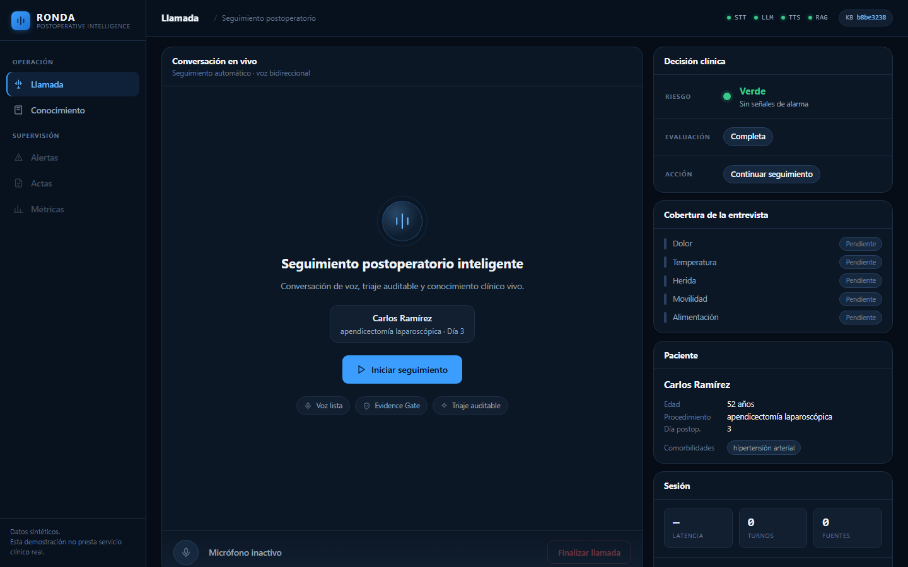

Agente de voz con IA para seguimiento postoperatorio, triaje clínico auditable y conocimiento que puede aprender —y olvidar— en tiempo real.

Interfaz real de la aplicación. Paciente de demostración con datos sintéticos.
El paciente sale del hospital y la ventana de riesgo se traslada a su casa. Durante los días siguientes pueden aparecer signos de alarma —infección de la herida, fiebre que sube, dolor que no cede, sangrado tardío— que solo se detectan preguntando de forma sistemática.
Llamar a todos los pacientes operados, todos los días, excede la capacidad de enfermería disponible.
Un seguimiento útil recorre siempre los mismos dominios clínicos, sin saltarse ninguno por falta de tiempo.
En un contexto clínico, una afirmación sin fuente no es un detalle menor: es un riesgo.
Conversación de voz bidireccional en español colombiano, con detección de habla e interrupción del agente.
Recorre un protocolo de seis dominios clínicos y registra qué llegó a evaluar de verdad y qué quedó pendiente.
Ninguna afirmación clínica sale al aire sin un fragmento documental verificable que la sostenga.
Ante una señal de alarma crea el acta de inmediato y deriva el caso al equipo de enfermería.
Cada una de estas propiedades está impuesta por el código, no confiada al criterio del modelo de lenguaje.
El riesgo clínico y el estado de la evaluación son variables distintas y solo se combinan al cerrar la llamada.
El nivel final es el máximo de seis carriles. El modelo puede subir una alarma; jamás puede bajarla.
Que un paciente no hable de fiebre no significa que no la tenga. Sin evaluar no es lo mismo que descartado.
Una compuerta verifica cada oración clínica y su evidencia antes de que llegue al sintetizador de voz.
Si el proveedor del modelo cae, RONDA sigue triando con reglas. Pierde naturalidad, no seguridad.
El sistema no cierra casos: los ordena. La decisión clínica siempre termina en una persona.
RONDA versiona el conocimiento mediante kb_version. Una
evidencia antigua deja de ser válida cuando cambia el corpus. Al eliminar un
documento no basta con marcarlo como borrado: se comprueba que el almacén
vectorial devuelve cero coincidencias.
El contrapeso, sin ocultarlo. Benchmark interno sobre datos sintéticos. Esa captura del 100 % se paga con sobretriaje: 111 de 246 conversaciones verdes fueron dirigidas a revisión humana. En un servicio real, eso es carga adicional para enfermería. Es una decisión deliberada, no un logro gratuito.
Una demostración completa de voz, triaje, evidencia, escalamiento, conocimiento vivo y olvido verificable.